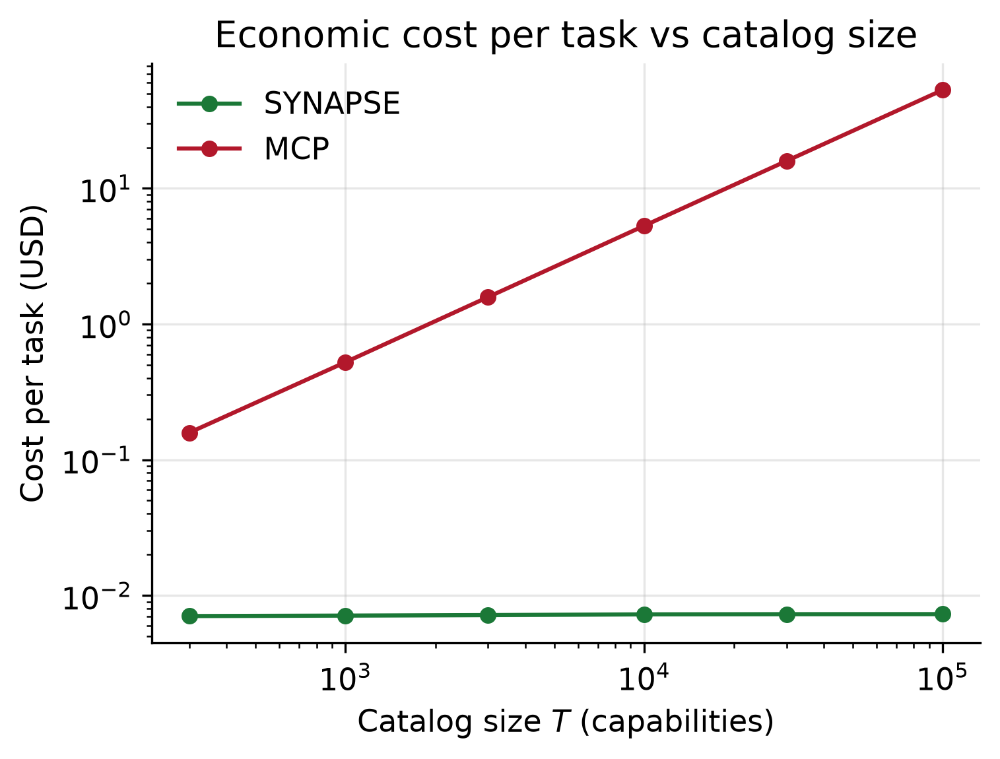
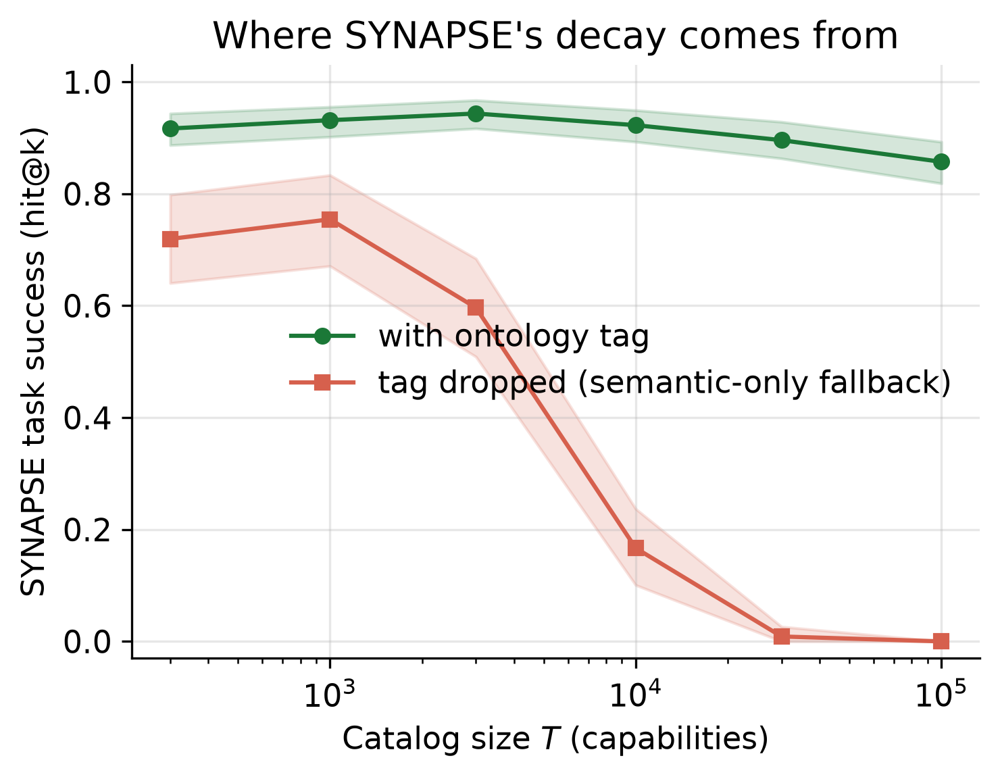
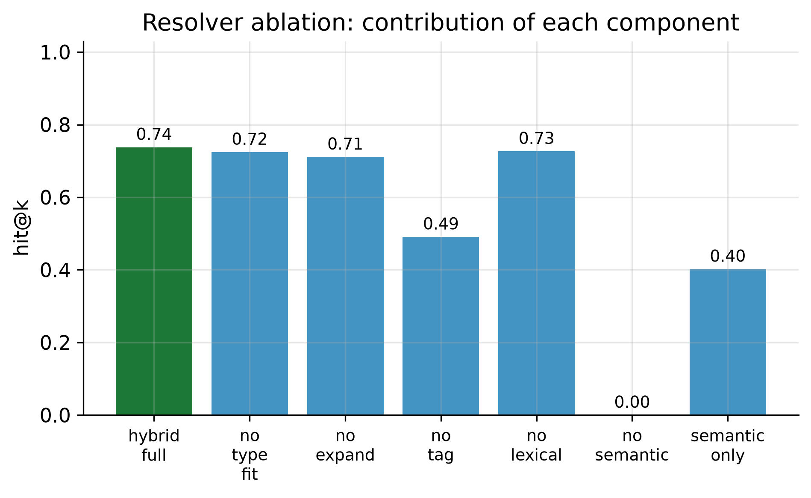
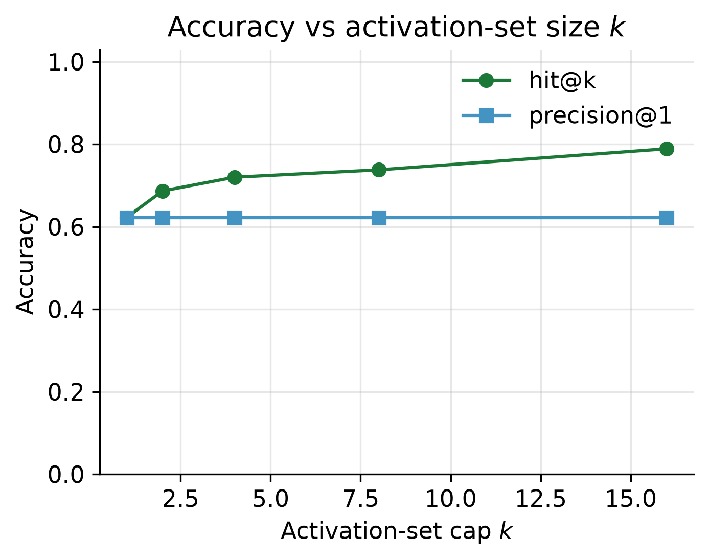

Scale-Invariant Capability Activation for Large Language Model Agents via a Capability Knowledge Graph
Debasish Tripathy
Today's agent protocols inject every tool description into the model's context, so
per-turn cost grows linearly with the number of tools. More tools make the agent
worse. SYNAPSE breaks that coupling: capabilities live in a signed knowledge graph,
the model only ever sees six fixed verbs, and per-turn context stays constant.
MCP and A2A present every registered tool in-context on every turn. That is an O(T) tax in
the number of tools T. Beyond the context window, the right tools get truncated away and
selection accuracy collapses. This is structural, not a tuning problem.
🧱
Context exhaustion
Thousands of tool schemas overflow even long windows and evict the task-relevant content.
💸
Cost inflation
Every turn re-pays for every tool's tokens. Cost scales with catalog size, not task difficulty.
📉
Accuracy collapse
Larger prompts dilute attention and add near-duplicate distractors, so selection quality falls.
At T = 100,000 toolsMCP (flat)SYNAPSE
Per-turn context7,088,086 tok971 tok
Cost per task$53.16$0.0073
Selection accuracy (hit@k)0.000.64
Growth in TΘ(T)O(1)
Measured, not modeled
Results across 6 scales × 5 seeds
A faithful, matched-scorer MCP baseline (identical embedder and cosine scorer, no strawman)
across T = 300 to 100,000. Every number is regenerated from seed by one command. Click any
figure to enlarge.
MCP success collapses at scale; SYNAPSE decays gracefully.Theory vs measurement: the visibility-ceiling bound predicts the collapse.

Cost per task: flat for SYNAPSE, rising to $53 for MCP.

Residual decay localizes to the tag-dropout subset.

Every resolver signal contributes; semantic and tag channels dominate.Confidence calibration (pooled ECE = 0.138).

Activation-set size k trades context for recall.
How it works
Three planes, one bounded interface
SYNAPSE separates a knowledge plane, a resolution plane, and an interaction plane. Only the
interaction plane ever touches the model context, and its size never depends on T.
01
Capability Knowledge Graph
Tools, types, providers, and concepts are typed, HMAC-signed nodes with typed edges, stored
outside the model context. The store refuses to index a node whose signature does not
verify, giving tamper-evidence and supply-chain integrity.
Bounded type lattice with subtype order
Geometric neighborhood bound, no factor of T
Tiered disclosure: compact tier-1 vs full tier-3
02
Hybrid Resolver
Maps an intent to a small activation set of at most k capabilities using five signals:
semantic, lexical, ontology-tag, graph-proximity, and type-fit. It runs entirely out of
context and returns a calibrated confidence.
Convex blend of five scoring signals
Grounded-miss abstention below a relevance floor
Signed, chainable resolution receipts
03
Six Meta-Verbs
The only tool surface the model sees. Their JSON schemas are constant in size, so the model's
per-turn context does not grow with the catalog. Everything scalable happens beneath them.
intendfocusplaninvokeobservefeedback
Why the collapse is inevitable
The visibility ceiling
The flat-protocol collapse is not a scorer artifact. It follows from first principles: a tool
can only be selected if its description fits inside the window. We derive a strict expectation
bound and the measured curve tracks it to within sampling error.
Theorem 2 · Visibility ceiling
With window W = 32,000 tokens and mean description length L̄ ≈ 70.9, the saturation
point is T* ≈ 451. Beyond it, expected accuracy decays as Θ(1/T) and cannot be
rescued by a better scorer, only by removing tools from the window.
Flat protocols pay one token term per tool, every turn.
SYNAPSE context is a constant κ, independent of T.
Neighborhood expansion is geometric in out-degree, never in T.
Real, runnable code
The six verbs are the whole surface
A complete, deterministic, offline reference implementation. Below is the actual meta-verb
interface and a minimal session.
# The only tool schemas the model ever sees. Fixed size, independent of T.
META_VERB_SCHEMAS = [
{"name": "intend", "description": "State a goal; receive a small ranked "
"set of relevant capabilities."},
{"name": "focus", "description": "Expand full detail for one capability id."},
{"name": "plan", "description": "Compute a type-safe executable DAG."},
{"name": "invoke", "description": "Execute a capability or plan; get a "
"signed receipt."},
{"name": "observe", "description": "Query working memory for prior results."},
{"name": "feedback","description": "Report usefulness; update edge weights."},
]
class SynapseSession:
"""A stateful session exposing exactly the six meta-verbs."""
def intend(self, goal, tags=None, **constraints):
# Resolve OUTSIDE the model: returns an activation set of <= k tools.
return self.resolver.resolve(goal=goal, tags=tags or [], **constraints)
def plan(self, goal_type=None, goal_effect=None):
# Type-safe regression planner over the activated subgraph only.
activated = [it.id for it in self._last_activation.nodes]
return self.planner.plan(activated=activated, goal_type=goal_type)
from synapse import build_ckg, SynapseSession
# 1. Load 100,000 tools into the signed knowledge graph (out of context).
ckg = build_ckg(catalog)
# 2. The model only ever sees six verbs, regardless of catalog size.
session = SynapseSession(ckg)
# 3. State an intent -> a small, bounded activation set comes back.
activation = session.intend("scan a repo for SQL injection", tags=["cwe:89"])
for node in activation.nodes:
print(node.id, node.summary, f"conf={node.confidence:.2f}")
# 4. Plan a type-safe DAG and execute it with a signed receipt.
plan = session.plan(goal_effect="report")
result = session.invoke(plan=plan)
print(result.receipt.receipt_id) # auditable provenance, intent -> artifact
# One command regenerates every number, table, and figure from seed.
python run_all.py
# Deterministic and offline. No API keys, no network, no hidden state.
# Outputs: results/*.csv, figures/*.pdf, paper/SYNAPSE.pdf
Fully reproducible
The artifact is deterministic and offline. A single command regenerates every result, and
12 conformance tests encode the protocol's normative requirements, several of which are direct
empirical checks of the theorems.
@article{tripathy2026synapse,
title = {SYNAPSE: Scale-Invariant Capability Activation for Large
Language Model Agents via a Capability Knowledge Graph},
author = {Tripathy, Debasish},
year = {2026},
url = {https://github.com/Debsasish/SYNAPSE}
}